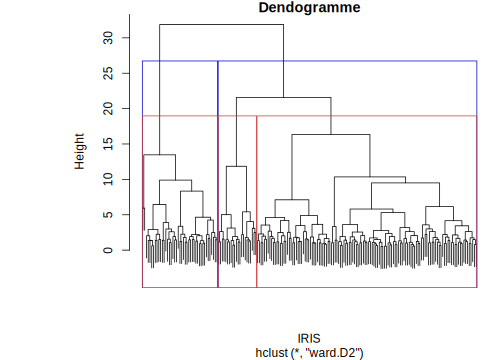

Section 11 Clustering : application sur le RP 2019
Pour un rappel des fondements théoriques des techniques de clustering, voir par exemple ici, ou là.
Ces techniques font partie des méthodes d’apprentissage dit non supervisé, il n’y a pas de variable d’intérêt ou variable cible, on cherche plutôt à rassembler des observations qui “se ressemblent” mais pas d’expliquer une variable/un phénomène par rapport à d’autres.
11.1 Choix des variables et préparation du tableau final
A partir de la base du RP2019, l’objectif de notre analyse est de décrire une commune ou un groupe de communes, en rassemblant des zones infracommunales (IRIS) qui se ressemblent ou sont relativement homogènes, c’est-à-dire qui ont des caractéristiques proches. Mais, bien sûr, les méthodes de clustering peuvent être appliquées à toutes sortes de problématiques et de données.
Pour cela, on doit avoir un tableau avec n individus ou observations (lignes) et p variables (colonnes), la mesure des variables peut être des effectifs, mais aussi des proportions. L’idée étant de regrouper nos IRIS en classes homogènes (=clusters) en un nombre plus restreint, nos observations sont donc constituées ici par les IRIS. Il faut ensuite choisir sur quelles caractéristiques on va les regrouper et chercher une certaine homogénéité. Cela peut être à partir de différentes choses selon notre base de données : caractéristiques socio-professionnelles de la personne de référence du ménage, caractéristiques des logements.
11.1.1 Variables socio-professionnelles caractérisant la personne de référence du ménage
On va dans cet exemple (communes de l’Est parisien constitué des 11ème, 12ème et 20ème arrondissements de Paris) s’intéresser aux caractéristiques socio-professionnelles de la population, ici néanmoins par la seule personne de référence du ménage : on aura en lignes nos n IRIS des 3 arrondissements et en colonnes nos variables d’entrées, soient par exemple le nombre d’habitants, le nombre d’individus qui sont actuellement chômeurs, le nombre de personnes en emploi, le nombre d’individus qui ont moins de 15 ans, etc.
On va alors réutiliser la fonction créée précédemment somme() et on va en créer une autre pour avoir des tableaux de contingence dans le cas de variables ave plusieurs modalités.
Pour caractériser la population par IRIS à partir de variables socio-professionnnelles, on peut choisir des variables classiques du type : - diplôme le plus élevé (DIPLM, à recoder pour avoir moins de modalités) ; - type d’activité (TACTM) pour différencier les actifs des inactifs ; - condition d’emploi (EMPLM) ; - situation quant à l’immigration (IMMIM) ; - sexe (SEXEM).
Il faudra néanmoins faire attention à ce que certaines modalités ne se recoupent pas entre elles, notamment quand l’information sur la population de plus de 14 ans est rassemblée dans une modalité spécifique, ou quand l’information est trop proche - par exemple la conditions d’emploi et le type d’activité. Mais on pourra le faire dans un second temps en étudiant les corrélations entre les variables finalement obtenues.
Regardons d’abord pour quelles variables un regroupement et un recodage des modalités est nécessaire, avant d’appliquer nos fonctions de tableaux de contingence.
Pour la variable de diplôme :
# Chargement des librairies
# library(tidyverse)
# library(janitor)
# library(gt)
meta %>%
select(COD_VAR, COD_MOD, LIB_MOD) %>%
filter(COD_VAR=="DIPLM")# A tibble: 13 x 3
COD_VAR COD_MOD LIB_MOD
<fct> <fct> <fct>
1 DIPLM 1 Pas de scolarité ou arrêt avant la fin du primaire
2 DIPLM 2 Aucun diplôme et scolarité interrompue à la fin du primaire ~
3 DIPLM 3 Aucun diplôme et scolarité jusqu’à la fin du collège ou au-d~
4 DIPLM 11 CEP (certificat d’études primaires)
5 DIPLM 12 BEPC, brevet élémentaire, brevet des collèges, DNB
6 DIPLM 13 CAP, BEP ou diplôme de niveau équivalent
7 DIPLM 14 Baccalauréat général ou technologique, brevet supérieur, cap~
8 DIPLM 15 Baccalauréat professionnel, brevet professionnel, de technic~
9 DIPLM 16 BTS, DUT, Deug, Deust, diplôme de la santé ou du social de n~
10 DIPLM 17 Licence, licence pro, maîtrise, diplôme équivalent de niveau~
11 DIPLM 18 Master, DEA, DESS, diplôme grande école niveau bac+5, doctor~
12 DIPLM 19 Doctorat de recherche (hors santé)
13 DIPLM YY Hors résidence principale Ici, il faut regrouper les modalités comme ceci par exemple : “Peu ou pas diplomés” (toutes les modalités en-dessous du Bac : “1”,“2”,“3”, “11”, “12” et “13”), “Bac” (quel que soit le type : modalités “14” et “15”), “Bac+2à4” (modalités “16” et “17”), “Bac+5ou+” (modalités “18” et “19”)
Pour la variable du type d’activités :
meta %>%
select(COD_VAR, COD_MOD, LIB_MOD) %>%
filter(COD_VAR=="TACTM")# A tibble: 7 x 3
COD_VAR COD_MOD LIB_MOD
<fct> <fct> <fct>
1 TACTM 11 Actifs ayant un emploi
2 TACTM 12 Chômeurs
3 TACTM 21 Retraités ou préretraités
4 TACTM 22 Élèves
5 TACTM 24 Femmes ou hommes au foyer
6 TACTM 25 Autres inactifs
7 TACTM YY Hors résidence principaleOn peut regrouper les 4 dernières modalités (hors “YY”) comme une catégorie large d’inactifs (“21”,“22”,“24” et “25”), ce qui permet d’avoir une distinction entre “en emploi”, “chômeurs” et “inactifs”. Il faudra faire attention néanmoins si on utilise également la condition d’emploi pour que cette variable ne soit pas redondante avec la modalité “en emploi”.
Et enfin, pour la condition d’emploi :
meta %>%
select(COD_VAR, COD_MOD, LIB_MOD) %>%
filter(COD_VAR=="EMPLM")# A tibble: 11 x 3
COD_VAR COD_MOD LIB_MOD
<fct> <fct> <fct>
1 EMPLM 11 En contrat d'apprentissage ou de professionnalisation
2 EMPLM 12 Placés par une agence d'intérim
3 EMPLM 13 Emplois aidés (contrat unique d'insertion
4 EMPLM 14 Stagiaires rémunérés en entreprise
5 EMPLM 15 Autres emplois à durée limitée
6 EMPLM 16 Emplois sans limite de durée
7 EMPLM 21 Non salariés : Indépendants
8 EMPLM 22 Non salariés : Employeurs
9 EMPLM 23 Non salariés : Aides familiaux
10 EMPLM YY Hors résidence principale
11 EMPLM ZZ Sans objet (sans emploi) Cette variable peut permettre de distinguer au sein des personnes en emploi, celles en contrat à durée indéterminée (ici modalités “16”) par rapport à celles avec d’autres types de contrats ou statuts (intérim - “12”, CDD - “15”, mais aussi stage - “14”, apprentissage - “11” ou encore emploi aidé - “13”), ou encore celles qui sont indépendants (ici “21”, “22”, “23”). C’est donc comme cela qu’on pourra regrouper ces modalités.
11.1.2 Création des différents tableaux de contingence
On crée notre nouvelle fonction qu’on va appeler tab_cont_n_iris, pour avoir en ligne les IRIS et en colonne chaque modalité de la variable en question :
tab_cont_n_iris <- function(data, arrdt_filtre, ..., nom_var, var, prefix_var)
{
tab_n <- data %>%
filter(ARM %in% arrdt_filtre) %>%
group_by(...) %>%
summarise({{ nom_var }} := round(sum(IPONDL))) %>%
pivot_wider(names_from = {{ var }}, values_from = {{ nom_var }},
values_fill = 0, names_prefix = prefix_var)
return(tab_n)
}On crée maintenant nos différents tableaux de contingence.
# On retire les résidences non principales (par n'importe quelle variable
# qui a cette modalité)
RP_1 <- RP %>% filter(SEXEM!="Y")
# Pour la variable du nombre d'habitants
Nbhab <- RP_1 %>% somme(ARM %in% c("75111", "75112", "75120"),
var_gpe=IRIS, nom_var=nb_hab, var1=round(IPONDL))
# Pour la variable de diplôme :
dipl <- RP_1 %>%
mutate(dipl=as.factor(case_when(DIPLM %in% c("01", "02", "03", "11", "12", "13") ~ "Peu_pas_dipl",
DIPLM %in% c("14", "15") ~ "Bac",
DIPLM %in% c("16", "17") ~ "Bac+2ou4",
DIPLM %in% c("18", "19") ~ "Bac+5ou+"))) %>%
tab_cont_n_iris(arrdt_filtre=c("75111", "75112", "75120"), IRIS, dipl,
nom_var=diplome, var=dipl, prefix_var="nb_")
# Pour la variable de type d'activité
activite <- RP_1 %>%
mutate(typ_act = as.factor(case_when(TACTM == "11" ~ "en emploi",
TACTM == "12" ~ "chômeurs",
TACTM %in% c("21","22","24","25") ~ "inactifs"))) %>%
tab_cont_n_iris(arrdt_filtre=c("75111", "75112", "75120"), IRIS, typ_act,
nom_var=activite, var=typ_act, prefix_var="nb_")
# Pour la variable de condition d'emploi
cond_empl <- RP_1 %>%
mutate(cond_empl = as.factor(case_when(EMPLM == "16" ~ "CDI",
EMPLM %in% c("11","12","13","14","15") ~ "EDDouautres",
EMPLM %in% c("21","22","23") ~ "independants",
EMPLM == "ZZ" ~ "sans_emploi"))) %>%
tab_cont_n_iris(arrdt_filtre=c("75111", "75112", "75120"), IRIS, cond_empl,
nom_var=condempl, var=cond_empl, prefix_var="nb_")
# Pour la variable de sexe :
sexe <- RP_1 %>%
mutate(SEXEM = factor(SEXEM, labels=c("Homme", "Femme"))) %>%
tab_cont_n_iris(arrdt_filtre=c("75111", "75112", "75120"), IRIS, SEXEM,
nom_var=sexe, var=SEXEM, prefix_var="nb_")
# Pour la variable renseignant du nombre d'immigrés :
immi <- RP %>%
filter(IMMIM=="1") %>%
somme(ARM %in% c("75111", "75112", "75120"),
var_gpe=IRIS, nom_var=nb_immi, var1=round(IPONDL))
# On supprime la table RP_1 pour ne pas surcharger l'environnement
rm(RP_1)11.1.3 Création du tableau final
On va rassembler tous ces tableaux et donc ces informations en un seul tableau. Comme on a plus de 2 tableaux à fusionner, on utilise une liste dans laquelle on stocke l’ensemble de nos tableaux, et ensuite on réalise une jointure avec left_join, mais en passant par la fonction reduce() du package purr() qui est inclus dans tidyverse pour l’appliquer à notre liste de tableaux.
list_tab <- list(data.frame(Nbhab), data.frame(dipl), data.frame(activite),
data.frame(cond_empl), data.frame(sexe), data.frame(immi))
clust <- data.frame(purrr::reduce(list_tab, left_join, by='IRIS'))
head(clust)# A tibble: 6 x 16
IRIS nb_hab nb_Bac nb_Bac.2ou4 nb_Bac.5ou. nb_Peu_pas_dipl nb_chômeurs
<fct> <dbl> <dbl> <dbl> <dbl> <dbl> <dbl>
1 751114101 1595 220 384 502 464 170
2 751114102 1466 164 450 659 289 173
3 751114103 928 116 259 456 155 102
4 751114104 944 109 206 431 154 108
5 751114105 1082 144 215 532 236 71
6 751114106 1446 181 396 667 247 93
# i 9 more variables: nb_en.emploi <dbl>, nb_inactifs <dbl>, nb_CDI <dbl>,
# nb_EDDouautres <dbl>, nb_independants <dbl>, nb_sans_emploi <dbl>,
# nb_Homme <dbl>, nb_Femme <dbl>, nb_immi <dbl># On supprime les tables intermédiaires pour ne pas surchager notre environnement
rm(Nbhab, dipl, activite, cond_empl, sexe, immi)On va rajouter le nom des IRIS pour chaque commune et l’inclure comme identifiant dans le tableau, c’est-à-dire dans le nom de la 1ère colonne (avec la fonction row.names()), cela peut être conseillé pour la procédure de clustering, afin que chaque IRIS soit bien identifié par son nom (label) ; on verra toutefois dans notre exemple que cela devient illisible si on a trop d’IRIS/individus. Pour cela, on va récupérer le nom des IRIS dans le fichier de métadonnées “meta”, en supprimant l’information entre parenthèses avec la fonction str_replace() pour n’avoir que le numéro de l’IRIS :
# On récupère les noms des IRIS dans le fichier de métadonnées "meta"
list_nom_IRIS <- meta %>%
mutate(COM = substr(COD_MOD, 1, 5)) %>%
select(COD_VAR, COD_MOD, LIB_MOD, COM) %>%
filter(COD_VAR == "IRIS" & COM %in% c("75111", "75112", "75120")) %>%
rename(IRIS = COD_MOD) %>%
select(LIB_MOD, IRIS)
# On supprime la fin du nom qui est entre parenthèse gràce à une expression régulière
list_nom_IRIS$LIB_MOD <- str_replace(list_nom_IRIS$LIB_MOD, " \\s*\\([^\\)]+\\)", "")
clust <- left_join(clust, list_nom_IRIS, by="IRIS")
row.names(clust) <- clust$LIB_MOD
head(clust)# A tibble: 6 x 17
IRIS nb_hab nb_Bac nb_Bac.2ou4 nb_Bac.5ou. nb_Peu_pas_dipl nb_chômeurs
<fct> <dbl> <dbl> <dbl> <dbl> <dbl> <dbl>
1 751114101 1595 220 384 502 464 170
2 751114102 1466 164 450 659 289 173
3 751114103 928 116 259 456 155 102
4 751114104 944 109 206 431 154 108
5 751114105 1082 144 215 532 236 71
6 751114106 1446 181 396 667 247 93
# i 10 more variables: nb_en.emploi <dbl>, nb_inactifs <dbl>, nb_CDI <dbl>,
# nb_EDDouautres <dbl>, nb_independants <dbl>, nb_sans_emploi <dbl>,
# nb_Homme <dbl>, nb_Femme <dbl>, nb_immi <dbl>, LIB_MOD <chr>Une dernière étape est de faire attention aux IRIS qui compte trop peu d’habitants ; dans le 12ème arrondissement par exemple, il y a le Bois de Vincennes, donc il faut probablement le supprimer. On va regarder combien et quel IRIS est concerné. Il y aura donc des données manquantes pour ces 2 quartiers dans la carte finale qu’on réalisera avec la répartition des IRIS selon les clusters obtenus…
clust %>% filter(nb_hab<=250)# A tibble: 4 x 17
IRIS nb_hab nb_Bac nb_Bac.2ou4 nb_Bac.5ou. nb_Peu_pas_dipl nb_chômeurs
<fct> <dbl> <dbl> <dbl> <dbl> <dbl> <dbl>
1 751124577 132 23 86 1 25 0
2 751124677 122 5 7 78 32 1
3 751124707 210 23 49 110 44 10
4 751207917 2 1 0 0 1 0
# i 10 more variables: nb_en.emploi <dbl>, nb_inactifs <dbl>, nb_CDI <dbl>,
# nb_EDDouautres <dbl>, nb_independants <dbl>, nb_sans_emploi <dbl>,
# nb_Homme <dbl>, nb_Femme <dbl>, nb_immi <dbl>, LIB_MOD <chr># On supprime donc ces 4 IRIS
clust <- clust %>% filter(!IRIS %in% c("751124577", "751124677", "751124707", "751207917"))11.1.4 choix des variables actives dans le clustering
Il nous reste, en dernière étape, de choisir les variables à inclure dans le clustering et vérifier si certaines d’entre elles ne sont pas corrélées, c’est-à-dire ne donnent pas la même information. Cela est important car sinon dans la procédure de clustering, cela s’apparente à donner un poids supérieur à une information si on la met en double voire en triple par exemple. C’est typiquement le cas pour les modalités de la variable de type d’activité “inactifs” ou “chômeurs” et la modalité de la variable de condition d’emploi “sans_emploi” : si on les laisse toutes les deux, la même information va peser 2 fois dans l’analyse.
Pour simplifier la procédure et surtout l’interprétation des résultats, on va réaliser un clustering avec quelques variables socio-professionnelles.
On peut vérifier la corrélation à l’aide d’une fonction comme cor() combinées avec la fonction symnum(), ou rcorr() du package Hmisc, ou corrplot() du package du même nom, ou encore pairs(). Attention toutefois, ces fonctions ne s’appliquent que sur des variables numériques, il nous faut donc sélectionner les colonnes sans la première (code IRIS), ni la dernière (libellé IRIS), ou en sélectionnant les seules variables qui nous intéressent. Attention bis (!) : comme ici nous avons beaucoup de variables, il vaut mieux sélectionner des variables par groupe de 10 ou 15 par exemple car sinon cela peut-être illisible selon les fonctions !
# names(clust)
cor(clust[, c("nb_hab" , "nb_Bac", "nb_Bac.2ou4" , "nb_Bac.5ou.", "nb_Peu_pas_dipl", "nb_chômeurs", "nb_en.emploi",
"nb_inactifs", "nb_CDI", "nb_EDDouautres", "nb_independants", "nb_sans_emploi", "nb_Homme", "nb_Femme", "nb_immi")]) nb_hab nb_Bac nb_Bac.2ou4 nb_Bac.5ou. nb_Peu_pas_dipl
nb_hab 1.0000000 0.8479488 0.9247848 0.736002172 0.50729089
nb_Bac 0.8479488 1.0000000 0.7448261 0.446648576 0.61497930
nb_Bac.2ou4 0.9247848 0.7448261 1.0000000 0.780986989 0.30377262
nb_Bac.5ou. 0.7360022 0.4466486 0.7809870 1.000000000 -0.16292611
nb_Peu_pas_dipl 0.5072909 0.6149793 0.3037726 -0.162926110 1.00000000
nb_chômeurs 0.6816670 0.7177205 0.5946751 0.288665419 0.66445148
nb_en.emploi 0.9485273 0.7907836 0.9357874 0.813416017 0.35646919
nb_inactifs 0.8257869 0.7400556 0.7164255 0.488899035 0.59983435
nb_CDI 0.9376096 0.8076210 0.9062100 0.715671158 0.45665277
nb_EDDouautres 0.6563692 0.5729311 0.6597554 0.597917872 0.20549565
nb_independants 0.6352261 0.4199977 0.6809994 0.820243286 -0.08615219
nb_sans_emploi 0.8731755 0.8127794 0.7585245 0.484447380 0.68228037
nb_Homme 0.9605740 0.8368407 0.9078513 0.737362848 0.47903896
nb_Femme 0.9622252 0.8305347 0.9110366 0.711177012 0.51202263
nb_immi 0.5769748 0.6527680 0.3739943 0.008326585 0.86519656
nb_chômeurs nb_en.emploi nb_inactifs nb_CDI nb_EDDouautres
nb_hab 0.6816670 0.9485273 0.8257869 0.9376096 0.6563692
nb_Bac 0.7177205 0.7907836 0.7400556 0.8076210 0.5729311
nb_Bac.2ou4 0.5946751 0.9357874 0.7164255 0.9062100 0.6597554
nb_Bac.5ou. 0.2886654 0.8134160 0.4888990 0.7156712 0.5979179
nb_Peu_pas_dipl 0.6644515 0.3564692 0.5998343 0.4566528 0.2054957
nb_chômeurs 1.0000000 0.6271495 0.5194999 0.6106666 0.5661625
nb_en.emploi 0.6271495 1.0000000 0.6488894 0.9619222 0.7325112
nb_inactifs 0.5194999 0.6488894 1.0000000 0.6885689 0.3442777
nb_CDI 0.6106666 0.9619222 0.6885689 1.0000000 0.5752262
nb_EDDouautres 0.5661625 0.7325112 0.3442777 0.5752262 1.0000000
nb_independants 0.3470646 0.7284573 0.3561869 0.5471033 0.6080771
nb_sans_emploi 0.7122787 0.7123865 0.9697723 0.7401952 0.4446805
nb_Homme 0.6899914 0.9496718 0.7656565 0.9216635 0.6908547
nb_Femme 0.6838107 0.9197890 0.8317221 0.9182378 0.6201284
nb_immi 0.7455824 0.4599014 0.5361956 0.4881757 0.4210433
nb_independants nb_sans_emploi nb_Homme nb_Femme nb_immi
nb_hab 0.63522610 0.8731755 0.9605740 0.9622252 0.576974760
nb_Bac 0.41999769 0.8127794 0.8368407 0.8305347 0.652767986
nb_Bac.2ou4 0.68099944 0.7585245 0.9078513 0.9110366 0.373994262
nb_Bac.5ou. 0.82024329 0.4844474 0.7373628 0.7111770 0.008326585
nb_Peu_pas_dipl -0.08615219 0.6822804 0.4790390 0.5120226 0.865196556
nb_chômeurs 0.34706461 0.7122787 0.6899914 0.6838107 0.745582396
nb_en.emploi 0.72845728 0.7123865 0.9496718 0.9197890 0.459901421
nb_inactifs 0.35618692 0.9697723 0.7656565 0.8317221 0.536195590
nb_CDI 0.54710328 0.7401952 0.9216635 0.9182378 0.488175700
nb_EDDouautres 0.60807711 0.4446805 0.6908547 0.6201284 0.421043286
nb_independants 1.00000000 0.3921254 0.6679781 0.5977243 0.111602715
nb_sans_emploi 0.39212544 1.0000000 0.8261196 0.8786889 0.653339741
nb_Homme 0.66797814 0.8261196 1.0000000 0.8887148 0.585342998
nb_Femme 0.59772430 0.8786889 0.8887148 1.0000000 0.521287797
nb_immi 0.11160271 0.6533397 0.5853430 0.5212878 1.000000000# On va retirer : "nb_hab" , "nb_en.emploi", "nb_sans_emploi","nb_Homme",
# "nb_Femme", "nb_CDI","nb_Bac.2ou4"
# Pour voir plus rapidement avec des indications les fortes corrélations et
# sans les variables mentionnées ci-dessous :
symnum(cor(clust[ , c("nb_Bac", "nb_Bac.5ou.", "nb_Peu_pas_dipl", "nb_chômeurs", "nb_CDI",
"nb_inactifs", "nb_EDDouautres", "nb_independants", "nb_immi")])) nb_B n_B. n_P nb_c n_C nb_nc n_E nb_nd nb_m
nb_Bac 1
nb_Bac.5ou. . 1
nb_Peu_pas_dipl , 1
nb_chômeurs , , 1
nb_CDI + , . , 1
nb_inactifs , . . . , 1
nb_EDDouautres . . . . . 1
nb_independants . + . . . , 1
nb_immi , + , . . . 1
attr(,"legend")
[1] 0 ' ' 0.3 '.' 0.6 ',' 0.8 '+' 0.9 '*' 0.95 'B' 1# Pour info avec le package `corrplot`
library(corrplot)
corrplot(cor(clust[, c("nb_Bac", "nb_Bac.5ou.", "nb_Peu_pas_dipl", "nb_chômeurs", "nb_CDI", "nb_inactifs", "nb_EDDouautres", "nb_independants", "nb_immi")]),
type="upper", method="number", tl.col="black", tl.srt=40)Pour le dernier graphique, si la couleur est bleu foncé, ou si le coefficient est proche de 1, cela signifie que les variables sont corrélées (la statistique utilisée est le coefficient de corrélation de Pearson qui indique une relation linéaire entre deux variables continues, il varie entre -1 et 1 comme on peut le remarquer sur les premières matrices obtenues avec corrplot()).
On remarque ainsi que les variables de nombre d’habitants, nombre de personnes en emploi, nombre de personnes sans emploi, les deux variables de sexe, le nombre de CDI ou encore le nombre de bac +2 à 4 sont trop corrélées (cf. 1er tableau général des corrélations), soit entre elles soit avec d’autres variables. On décide donc de ne pas les retenir.
On va donc procéder à la suppression de certaines colonnes de notre table finale.
clust_socioprof <- clust[, c("nb_Bac", "nb_Bac.5ou.", "nb_Peu_pas_dipl",
"nb_chômeurs", "nb_CDI", "nb_inactifs",
"nb_EDDouautres", "nb_independants", "nb_immi")]Il peut être également plus pertinent de ne pas raisonner en nombre mais plutôt en proportion, pour éviter de capter un effet taille du nombre d’habitants dans un quartier donné. Dans ce cas, on calcule les proportions pour chacune de nos variables finales et on crée un nouvel objet pour cela.
clust_socioprof_prop <- clust %>%
select(c("nb_hab", "nb_Bac", "nb_Bac.5ou.", "nb_Peu_pas_dipl", "nb_chômeurs",
"nb_CDI", "nb_inactifs", "nb_EDDouautres", "nb_independants",
"nb_immi")) %>%
mutate(pct_Bac = (nb_Bac / nb_hab)*100,
pct_Bac5ouplus = (nb_Bac.5ou./ nb_hab)*100,
pct_Peu_pas_dipl = (nb_Peu_pas_dipl / nb_hab)*100,
pct_chômeurs = (nb_chômeurs / nb_hab)*100,
pct_CDI = (nb_CDI / nb_hab)*100,
pct_inactifs = (nb_inactifs / nb_hab)*100,
pct_EDDouautres = (nb_EDDouautres / nb_hab)*100,
pct_independants = (nb_independants / nb_hab)*100,
pct_immi = (nb_immi / nb_hab)*100) %>%
select(pct_Bac, pct_Bac5ouplus, pct_Peu_pas_dipl, pct_chômeurs, pct_CDI,
pct_inactifs, pct_EDDouautres, pct_independants, pct_immi)11.2 La méthode de la CAH appliquée à nos données
11.2.1 Constitution des classes
On reprend les étapes de la méthode décrite ici, une par une.
Pour la classification réalisée sur le tableau de contingence en effectifs, on utilise la méthode euclidienne pour la matrice des distances ; mais pour la classification réalisée sur le tableau de contingence en pourcentage (pour éviter un effet taille de nos IRIS), il faut utiliser la distance du khi-2. Pour cette dernière, nous avons besoin du package ade4 (à installer avant de le charger) et de sa fonction dist.dudi. Attention, cette fonction doit être utilisée sur un format particulier c’est pourquoi on l’utilise avec la fonction dudi.coa. Enfin, l’option amongrow=TRUE de la fonction dist.dudi permet de préciser que les distances doivent être calculées entre lignes, c’est-à-dire ici entre nos individus constitués par les IRIS (FALSE si on veut que la distance soit calculée entre colonnes).
#Etape 1 : on centre et réduit les variables si on prend la table en nombre
clust_socioprof_sc <- as.data.frame(scale(clust_socioprof))
# on n'applique pas cette procédure sur la table en proportion
#install.packages("ade4")
library(ade4)
#Etape 2 : on crée la matrice de distance, en utilisant la distance euclidienne
#standard pour la table en nombre, et la distance du khi-2 pour la table en %
dist_mat_socioprof_n <- dist(clust_socioprof_sc, method = 'euclidean')
dist_mat_socioprof_p <- dist.dudi(dudi.coa(clust_socioprof_prop, scannf=FALSE, nf=10),
amongrow=TRUE)
# si vous souhaitez voir et comparer les matrices de distances,
# vous devez les transformer en matrix avec la fonction 'as.matrix', par exemple :
# as.matrix(dist_mat_socioprof_n)
#Etape 3 : on choisit la méthode d'agrégation, ici la plus standard, le critère de Ward
classif_socioprof_n <- hclust(dist_mat_socioprof_n, method = "ward.D2")
classif_socioprof_p <- hclust(dist_mat_socioprof_p, method = "ward.D2")
#Etape 4 : on visualise l'arbre de classification ou dendogramme
plot(classif_socioprof_n, xlab="IRIS", main="Dendogramme table effectifs")plot(classif_socioprof_p, xlab="IRIS", main="Dendogramme table proportion")# plot(classif_socioprof_n, xlab="IRIS", main="Dendogramme", labels=FALSE)On remarque ici que comme nous avons mis en label (row.names) le nom des IRIS, on peut tout de suite savoir quels IRIS sont proches et vont former des classes. Toutefois, avec 190 IRIS ce n’est absolument pas lisible !! Donc on peut aussi les enlever avec l’option label=FALSE dans la fonction plot().
Il existe aussi une fonction via ggplot2 pour dessiner l’abre, mais il faut installer avant le package ggdendro.
library(ggdendro)
ggdendrogram(classif_socioprof_n, labels=FALSE)
ggdendrogram(classif_socioprof_p, labels=FALSE)Il faut maintenant prendre une décision : où coupe-t-on l’arbre pour obtenir une partition de la population (ici nos IRIS), autrement dit combien de classes choisissons-nous ?
On peut d’abord s’appuyer sur la forme du dendogramme : plus une “branche” est haute et plus on perd en distance ou ici (critère de Ward) en inertie interclasse2, il faudra donc couper l’arbre au niveau de cette branche. Il faut également prendre en compte ce qui peut être le mieux pour l’analyse : si on aboutit à une classification en 2 classes, cela risque d’être peu intéressant à analyser, mais si on a une classification en 5 classes ou plus, cela va devenir compliqué à interpréter…
Ici, dans les deux cas, il semble que choisir 2 classes soit très pertinent, mais on voit qu’on pourrait aussi choisir 3 ou 4 classes si l’on veut rentrer un peu plus dans le détail de l’analyse.
On peut également s’aider de représentations des sauts d’inertie du dendrogramme selon le nombre de classes qui peut être retenu, avec la fonction plot et en récupérant l’information sur l’inertie (height). Ci-dessous, trois types de graphes qui représentent exactement la même chose, mais selon des formes différentes : retenez celle que vous préférez et qui vous parle le plus !
#on stocke l'attribut `$height` dans l'objet `inertie` en triant les valeurs par ordre décroissant.
inertie_socioprof_n <- sort(classif_socioprof_n$height, decreasing=TRUE)
plot(inertie_socioprof_n, type="s", xlab="Nombre de classes", ylab="Inertie",
xlim = c(1,15), xaxp = c(1,15,14))
points(c(2, 3, 4), inertie_socioprof_n[c(2,3, 4)],
col = c("blue3", "brown3", "chartreuse3"), cex = 2, lwd = 2)#plot(inertie_socioprof_n, type="h", xlab="Nombre de classes", ylab="Inertie",
# xlim = c(1,15), xaxp = c(1,15,14))
#plot(inertie_socioprof_n, type="b", xlab="Nombre de classes", ylab="Inertie",
# xlim = c(1,15), xaxp = c(1,15,14))
inertie_socioprof_p <- sort(classif_socioprof_p$height, decreasing=TRUE)
plot(inertie_socioprof_p, type="s", xlab="Nombre de classes", ylab="Inertie",
xlim = c(1,15), xaxp = c(1,15,14))
points(c(2, 3, 4), inertie_socioprof_p[c(2, 3, 4)],
col = c("blue3", "brown3", "chartreuse3"), cex = 2, lwd = 2)Ou encore créer d’autres indicateurs plus rigoureux, comme la part de la perte d’inertie interclasse dans l’inertie totale (on parle aussi de “semi-partial R-squared”).
#on crée un indicateur de part en %
partinertie_socioprof_n <- inertie_socioprof_n/sum(inertie_socioprof_n)*100
plot(partinertie_socioprof_n, type="b", xlab="Nombre de classes",
ylab="Part dans l'inertie totale en %", xlim = c(1,15), xaxp = c(1,15,14))partinertie_socioprof_p <- inertie_socioprof_p/sum(inertie_socioprof_p)*100
plot(partinertie_socioprof_p, type="b", xlab="Nombre de classes",
ylab="Part dans l'inertie totale en %", xlim = c(1,15), xaxp = c(1,15,14))On voit que les graphiques sont assez proches, qu’ils soient construits à partir de la mesure en valeur absolue ou en valeur relative.
Enfin, à savoir que des fonctions existent qui donnent une indication de la “meilleure” partition à choisir, mais attention le choix se fait aussi (et peut-être surtout) en fonction de l’analyse que l’on veut mener et de l’interprétation que l’on pourra faire des classes obtenues ! Pour l’exemple, je vous mets ci-dessous le code de Julien Larmarange pour tester ce type de fonctions ; la “meilleure” partition selon la perte d’inertie relative est représentée par un point noir et la seconde par un point gris. On voit qu’ici il est bien indiqué d’abord 2 classes, puis comme seconde “meilleure” partition 3 classes, ce qui correspond plutôt bien au premier graphique qu’on avait construit.
library(devtools)
source(url("https://raw.githubusercontent.com/larmarange/JLutils/master/R/clustering.R"))
#On a choisit un maximum de 15 classes ici...
best.cutree(classif_socioprof_n, min=2, max=15, graph = TRUE,
xlab = "Nombre de classes", ylab = "Inertie relative")[1] 2best.cutree(classif_socioprof_p, min=2, max=15, graph = TRUE,
xlab = "Nombre de classes", ylab = "Inertie relative")[1] 2Finalement, au vu de la forme du dendogramme et des graphes sur l’inertie (et de la fonction d’aide à la décision précédente), on choisit de prendre 3 classes pour une analyse plus fine, mais on va stocker également les résultats pour 2 classes pour les 2 analyses. On peut de nouveau visualiser le dendogramme en matérialisant les différents choix du nombre de classes.
par(mfrow = c(1, 1), mar=c(5, 9, 1, 1))
plot(classif_socioprof_n, xlab="IRIS", main="Dendogramme", label=FALSE)
rect.hclust(classif_socioprof_n, k=2, border = 'blue3')
rect.hclust(classif_socioprof_n, k=3, border = 'brown3')
# On peut aussi couper l'arbre vers la hauteur en ajoutant une ligne sur le graphe
# avec la fonction `abline` et l'option `h = 19` pour le graphe précédent :
# abline(h = 19, col = 'darkred')
par(mfrow = c(1, 1), mar=c(5, 9, 1, 1))
plot(classif_socioprof_p, xlab="IRIS", main="Dendogramme", label=FALSE)
rect.hclust(classif_socioprof_p, k=2, border = 'blue3')
rect.hclust(classif_socioprof_p, k=3, border = 'brown3')On peut également utiliser la fonction color_branches() du package dendextend(), mais il faut appeler de nouveau ggplot2 après.
# On peut encore également utiliser la fonction `color_branches()` du package `dendextend()`
# mais il faut appeler de nouveau `ggplot2` après
library(dendextend)
library(ggplot2)
ggplot(color_branches(classif_socioprof_n, k = 3), labels = FALSE)
On choisit donc d’abord d’analyser nos deux clustering en 2 ou 3 classes : pour découper l’arbre et obtenir la partition souhaitée, on utilise la fonction cutree(), et on peut ensuite visualiser quelle zone infracommunale IRIS est dans quelle classe et le nombre d’IRIS par classe.
On intègre ensuite la variable au tableau initial “clust” qui contient les variables utilisées, mais on pourra ensuite fusionner la table avec notre table initiale “RP” pour mener des analyses plus approfondies des classes, y compris avec des variables non utilisées dans le clustering.
#Découpage en k classes
classe3_soprof_n <- cutree(classif_socioprof_n, k=3)
classe2_soprof_n <- cutree(classif_socioprof_n, k=2)
classe3_soprof_p <- cutree(classif_socioprof_p, k=3)
classe2_soprof_p <- cutree(classif_socioprof_p, k=2)
#Liste des groupes
#library(janitor)
tabyl(classe3_soprof_n) %>% adorn_pct_formatting() %>% gt()| classe3_soprof_n | n | percent |
|---|---|---|
| 1 | 43 | 22.6% |
| 2 | 125 | 65.8% |
| 3 | 22 | 11.6% |
tabyl(classe2_soprof_n) %>% adorn_pct_formatting() %>% gt()| classe2_soprof_n | n | percent |
|---|---|---|
| 1 | 43 | 22.6% |
| 2 | 147 | 77.4% |
tabyl(classe3_soprof_p) %>% adorn_pct_formatting() %>% gt()| classe3_soprof_p | n | percent |
|---|---|---|
| 1 | 42 | 22.1% |
| 2 | 120 | 63.2% |
| 3 | 28 | 14.7% |
tabyl(classe2_soprof_p) %>% adorn_pct_formatting() %>% gt()| classe2_soprof_p | n | percent |
|---|---|---|
| 1 | 162 | 85.3% |
| 2 | 28 | 14.7% |
sort(classe3_soprof_p) Folie Méricourt 1 Folie Méricourt 9 Folie Méricourt 10
1 1 1
Folie Méricourt 13 Roquette 1 Roquette 7
1 1 1
Roquette 16 Roquette 19 Roquette 20
1 1 1
Picpus 1 Picpus 2 Picpus 3
1 1 1
Picpus 4 Picpus 6 Picpus 19
1 1 1
Picpus 22 Bercy 4 Bercy 5
1 1 1
Quinze-Vingts 1 Quinze-Vingts 2 Belleville 1
1 1 1
Belleville 7 Belleville 9 Belleville 10
1 1 1
Belleville 11 Belleville 12 Belleville 13
1 1 1
Saint-Fargeau 5 Saint-Fargeau 8 Saint-Fargeau 10
1 1 1
Saint-Fargeau 11 Saint-Fargeau 12 Saint-Fargeau 15
1 1 1
Saint-Fargeau 16 Père Lachaise 7 Père Lachaise 9
1 1 1
Père Lachaise 11 Père Lachaise 16 Charonne 3
1 1 1
Charonne 12 Charonne 23 Charonne 26
1 1 1
Folie Méricourt 2 Folie Méricourt 3 Folie Méricourt 4
2 2 2
Folie Méricourt 5 Folie Méricourt 6 Folie Méricourt 7
2 2 2
Folie Méricourt 8 Folie Méricourt 14 Folie Méricourt 15
2 2 2
Saint-Ambroise 1 Saint-Ambroise 2 Saint-Ambroise 3
2 2 2
Saint-Ambroise 4 Saint-Ambroise 5 Saint-Ambroise 6
2 2 2
Saint-Ambroise 7 Saint-Ambroise 8 Saint-Ambroise 9
2 2 2
Saint-Ambroise 10 Saint-Ambroise 11 Saint-Ambroise 12
2 2 2
Saint-Ambroise 13 Saint-Ambroise 14 Roquette 2
2 2 2
Roquette 4 Roquette 5 Roquette 6
2 2 2
Roquette 8 Roquette 9 Roquette 10
2 2 2
Roquette 11 Roquette 12 Roquette 13
2 2 2
Roquette 14 Roquette 15 Roquette 17
2 2 2
Roquette 18 Roquette 21 Sainte-Marguerite 1
2 2 2
Sainte-Marguerite 2 Sainte-Marguerite 3 Sainte-Marguerite 4
2 2 2
Sainte-Marguerite 5 Sainte-Marguerite 6 Sainte-Marguerite 7
2 2 2
Sainte-Marguerite 8 Sainte-Marguerite 9 Sainte-Marguerite 10
2 2 2
Sainte-Marguerite 11 Sainte-Marguerite 12 Sainte-Marguerite 13
2 2 2
Bel-Air 2 Bel-Air 3 Bel-Air 4
2 2 2
Bel-Air 5 Bel-Air 6 Bel-Air 7
2 2 2
Bel-Air 8 Bel-Air 9 Bel-Air 12
2 2 2
Bel-Air 13 Bel-Air 14 Picpus 5
2 2 2
Picpus 8 Picpus 10 Picpus 11
2 2 2
Picpus 12 Picpus 13 Picpus 14
2 2 2
Picpus 15 Picpus 16 Picpus 17
2 2 2
Picpus 18 Picpus 20 Picpus 21
2 2 2
Picpus 23 Picpus 24 Bercy 1
2 2 2
Bercy 2 Bercy 3 Bercy 7
2 2 2
Quinze-Vingts 3 Quinze-Vingts 4 Quinze-Vingts 5
2 2 2
Quinze-Vingts 6 Quinze-Vingts 7 Quinze-Vingts 8
2 2 2
Quinze-Vingts 9 Quinze-Vingts 10 Quinze-Vingts 13
2 2 2
Belleville 2 Belleville 4 Belleville 6
2 2 2
Belleville 14 Saint-Fargeau 2 Saint-Fargeau 6
2 2 2
Saint-Fargeau 7 Saint-Fargeau 9 Saint-Fargeau 14
2 2 2
Père Lachaise 1 Père Lachaise 2 Père Lachaise 3
2 2 2
Père Lachaise 4 Père Lachaise 5 Père Lachaise 12
2 2 2
Père Lachaise 13 Père Lachaise 14 Père Lachaise 15
2 2 2
Charonne 2 Charonne 4 Charonne 5
2 2 2
Charonne 6 Charonne 13 Charonne 14
2 2 2
Charonne 15 Charonne 16 Charonne 17
2 2 2
Charonne 18 Charonne 24 Charonne 25
2 2 2
Folie Méricourt 11 Folie Méricourt 12 Roquette 3
3 3 3
Bel-Air 1 Bel-Air 10 Bel-Air 11
3 3 3
Picpus 9 Quinze-Vingts 12 Belleville 3
3 3 3
Belleville 5 Belleville 8 Saint-Fargeau 1
3 3 3
Saint-Fargeau 3 Saint-Fargeau 4 Saint-Fargeau 13
3 3 3
Père Lachaise 6 Père Lachaise 8 Père Lachaise 10
3 3 3
Charonne 1 Charonne 7 Charonne 8
3 3 3
Charonne 9 Charonne 10 Charonne 11
3 3 3
Charonne 19 Charonne 20 Charonne 21
3 3 3
Charonne 22
3 #Ajout des variables de classe dans la table initiale de clustering
clust_socioprof_n_cl <- cbind.data.frame(clust, classe3_soprof_n=as.factor(classe3_soprof_n),
classe2_soprof_n=as.factor(classe2_soprof_n))
clust_socioprof_p_cl <- cbind.data.frame(clust, classe3_soprof_p=as.factor(classe3_soprof_p),
classe2_soprof_p=as.factor(classe2_soprof_p))11.2.2 Visualisation sur la carte de la commune
Enfin, on peut visualiser sur la carte de la commune - ici 3 arrondissements de Paris - les trois classes construites et choisies.
library(geojsonsf)
library(sf)
library(mapsf)
# on charge le fonds de carte des IRIS
map_iris <- geojson_sf("data/map_iris.geojson")
# on charge le fonds de carte des arrdts de Paris
map_arrdt <- geojson_sf("data/arrondissements.geojson")
map_iris <- map_iris %>%
filter(insee_com %in% c("75111", "75112", "75120")) %>%
mutate(iris_code = as.character(code_iris)) %>%
rename(IRIS = iris_code) %>%
select(IRIS, nom_iris, nom_com, geometry)
map_arrdt <- map_arrdt %>%
filter(c_arinsee %in% c("75111", "75112", "75120")) %>%
mutate(c_arinsee = as.character(c_arinsee)) %>%
select(c_arinsee, geometry)
coord <- st_coordinates(st_centroid(map_iris))
map_iris <- cbind(map_iris, coord)
clust_map_socioprof_n <- clust_socioprof_n_cl %>%
select(IRIS, classe3_soprof_n) %>%
left_join(map_iris)
clust_map_socioprof_n <- st_as_sf(clust_map_socioprof_n)
mf_theme("agolalight")
mf_map(clust_map_socioprof_n, type="typo", var="classe3_soprof_n", col = "lightyellow",
border="gray80", lwd=0.4, pal = c("aquamarine3", "coral", "skyblue3"),
leg_pos = "bottomleft", leg_title="Cluster")
mf_map(map_arrdt, type = "base", col = NA, border="gray41",lwd=1,
add = TRUE)
mf_layout(title = "Quartiers de l'Est parisien découpés selon le cluster obtenu",
credits=" ")clust_map_socioprof_p <- clust_socioprof_p_cl %>%
select(IRIS, classe3_soprof_p) %>%
left_join(map_iris)
clust_map_socioprof_p <- st_as_sf(clust_map_socioprof_p)
mf_theme("agolalight")
mf_map(clust_map_socioprof_p, type="typo", var="classe3_soprof_p", col = "lightyellow",
border="gray80", lwd=0.4, pal = c("aquamarine3", "coral", "skyblue3", "hotpink3", "wheat4"),
leg_pos = "bottomleft", leg_title="Cluster")
mf_map(map_arrdt, type = "base", col = NA, border="gray41",lwd=1,
add = TRUE)
mf_layout(title = "Quartiers de l'Est parisien découpés selon le cluster obtenu",
credits=" ")On voit que les 2 cartes sont très proches ; mais il nous reste à comprendre les classes, c’est-à-dire à les interpréter, à partir des variables mises en input dans un premier temps.
11.2.3 Interprétation
Il faut maintenant comprendre la partition obtenue et interpréter nos 3 classes en les décrivant principalement ici à partir des variables utilisées dans le clustering. On peut pour cela utiliser le package FactoMiner qui permet avec la fonction catdes de sortir des résultats sur, d’une part, les liens les plus significatifs entre les variables actives de la CAH et la variable globale de cluster/classes, et, d’autre part de manière plus précise, sur les liens les plus significatifs entre les variables et chacune des classes.
library(FactoMineR)
desc_cl_soprof_n <- catdes(clust_socioprof_n_cl[, c("nb_Bac", "nb_Bac.5ou.",
"nb_Peu_pas_dipl",
"nb_chômeurs", "nb_CDI",
"nb_inactifs", "nb_EDDouautres",
"nb_independants","nb_immi",
"classe3_soprof_n")],
num.var = 10)
desc_cl_soprof_n
Link between the cluster variable and the quantitative variables
================================================================
Eta2 P-value
nb_Peu_pas_dipl 0.5381238 4.296779e-32
nb_Bac.5ou. 0.5315487 1.611105e-31
nb_CDI 0.4876232 7.024448e-28
nb_inactifs 0.4681841 2.283942e-26
nb_immi 0.4666958 2.965938e-26
nb_Bac 0.4320154 1.072676e-23
nb_independants 0.4003104 1.722386e-21
nb_chômeurs 0.3698221 1.777484e-19
nb_EDDouautres 0.2273108 3.376400e-11
Description of each cluster by quantitative variables
=====================================================
$`1`
v.test Mean in category Overall mean sd in category
nb_CDI 9.582799 897.6977 636.7053 176.24646
nb_inactifs 8.949150 504.6047 352.3053 120.48760
nb_Bac.5ou. 8.511953 705.6279 477.7211 154.33790
nb_Bac 8.282105 254.6047 181.9158 59.22607
nb_independants 7.486181 197.6977 138.7579 42.28834
nb_chômeurs 6.857757 151.9535 111.2895 42.01658
nb_EDDouautres 6.542592 153.1860 112.0421 45.77562
nb_immi 5.246672 362.5814 281.3368 99.25120
nb_Peu_pas_dipl 4.671264 438.8605 339.6421 138.42210
Overall sd p.value
nb_CDI 202.50790 9.445010e-22
nb_inactifs 126.53854 3.582287e-19
nb_Bac.5ou. 199.08322 1.710284e-17
nb_Bac 65.25798 1.210169e-16
nb_independants 58.54026 7.090682e-14
nb_chômeurs 44.08945 6.995035e-12
nb_EDDouautres 46.75871 6.046178e-11
nb_immi 115.13750 1.548713e-07
nb_Peu_pas_dipl 157.92979 2.993514e-06
$`2`
v.test Mean in category Overall mean sd in category
nb_independants -2.685421 130.512 138.7579 48.36240
nb_Bac.5ou. -2.883695 447.608 477.7211 131.88388
nb_EDDouautres -4.645655 100.648 112.0421 37.12686
nb_CDI -7.567696 556.320 636.7053 120.62601
nb_chômeurs -8.306346 92.080 111.2895 31.97639
nb_Bac -8.601800 152.472 181.9158 42.36991
nb_inactifs -8.628958 295.032 352.3053 83.62162
nb_immi -9.087265 226.456 281.3368 73.63222
nb_Peu_pas_dipl -9.415144 261.648 339.6421 89.25418
Overall sd p.value
nb_independants 58.54026 7.243855e-03
nb_Bac.5ou. 199.08322 3.930389e-03
nb_EDDouautres 46.75871 3.389998e-06
nb_CDI 202.50790 3.799008e-14
nb_chômeurs 44.08945 9.869379e-17
nb_Bac 65.25798 7.847555e-18
nb_inactifs 126.53854 6.191351e-18
nb_immi 115.13750 1.015616e-19
nb_Peu_pas_dipl 157.92979 4.724363e-21
$`3`
v.test Mean in category Overall mean sd in category
nb_Peu_pas_dipl 7.850713 588.86364 339.6421 129.52862
nb_immi 6.612083 434.36364 281.3368 104.87419
nb_chômeurs 3.347329 140.95455 111.2895 36.32239
nb_independants -5.808498 70.40909 138.7579 31.04931
nb_Bac.5ou. -6.855982 203.36364 477.7211 122.33098
Overall sd p.value
nb_Peu_pas_dipl 157.92979 4.136789e-15
nb_immi 115.13750 3.789501e-11
nb_chômeurs 44.08945 8.159442e-04
nb_independants 58.54026 6.303576e-09
nb_Bac.5ou. 199.08322 7.082440e-12clust_socioprof_p_cl <- clust_socioprof_p_cl %>%
mutate(pct_Bac = (nb_Bac / nb_hab)*100,
pct_Bac5ouplus = (nb_Bac.5ou./ nb_hab)*100,
pct_Peu_pas_dipl = (nb_Peu_pas_dipl / nb_hab)*100,
pct_chômeurs = (nb_chômeurs / nb_hab)*100,
pct_CDI = (nb_CDI / nb_hab)*100,
pct_inactifs = (nb_inactifs / nb_hab)*100,
pct_EDDouautres = (nb_EDDouautres / nb_hab)*100,
pct_independants = (nb_independants / nb_hab)*100,
pct_immi = (nb_immi / nb_hab)*100)
desc_cl_soprof_p <- catdes(clust_socioprof_p_cl[, c("pct_Bac", "pct_Bac5ouplus",
"pct_Peu_pas_dipl", "pct_chômeurs",
"pct_CDI", "pct_inactifs",
"pct_EDDouautres", "pct_independants",
"pct_immi", "classe3_soprof_p")],
num.var = 10)
desc_cl_soprof_p
Link between the cluster variable and the quantitative variables
================================================================
Eta2 P-value
pct_Peu_pas_dipl 0.77846082 6.304150e-62
pct_Bac5ouplus 0.71375149 1.605063e-51
pct_immi 0.70646394 1.684019e-50
pct_independants 0.33030084 5.245140e-17
pct_chômeurs 0.32906279 6.233843e-17
pct_Bac 0.15189749 2.041364e-07
pct_inactifs 0.13898368 8.386181e-07
pct_CDI 0.06624166 1.647878e-03
pct_EDDouautres 0.03777463 2.731373e-02
Description of each cluster by quantitative variables
=====================================================
$`1`
v.test Mean in category Overall mean sd in category
pct_immi 3.027004 24.507279 21.41919 4.645990
pct_Peu_pas_dipl 2.289488 29.481383 25.95872 4.662718
pct_independants -2.060313 9.402845 10.39387 2.320006
pct_CDI -2.060744 46.127625 47.77671 4.489556
pct_Bac5ouplus -3.268502 30.776809 35.61214 4.521941
Overall sd p.value
pct_immi 7.471382 0.002469905
pct_Peu_pas_dipl 11.268278 0.022051021
pct_independants 3.522712 0.039368655
pct_CDI 5.860615 0.039327491
pct_Bac5ouplus 10.834337 0.001081183
$`2`
v.test Mean in category Overall mean sd in category
pct_Bac5ouplus 10.266383 41.791556 35.612143 6.094537
pct_independants 6.903046 11.744841 10.393872 3.201152
pct_CDI 3.498480 48.915777 47.776708 6.134204
pct_Bac -3.011595 13.182659 13.626499 2.427248
pct_inactifs -4.005780 25.143961 26.456884 5.180629
pct_chômeurs -5.483185 7.622043 8.381789 2.183874
pct_immi -10.102537 17.225865 21.419193 3.396237
pct_Peu_pas_dipl -10.132755 19.615459 25.958720 4.378028
Overall sd p.value
pct_Bac5ouplus 10.834337 9.987980e-25
pct_independants 3.522712 5.089931e-12
pct_CDI 5.860615 4.679173e-04
pct_Bac 2.652788 2.598789e-03
pct_inactifs 5.899629 6.181307e-05
pct_chômeurs 2.494066 4.177353e-08
pct_immi 7.471382 5.383110e-24
pct_Peu_pas_dipl 11.268278 3.953515e-24
$`3`
v.test Mean in category Overall mean sd in category
pct_Peu_pas_dipl 11.108794 47.860127 25.958720 8.724913
pct_immi 10.204315 34.758474 21.419193 5.420073
pct_chômeurs 7.739484 11.759072 8.381789 2.004059
pct_Bac 5.356828 16.112823 13.626499 2.680740
pct_inactifs 4.862449 31.476001 26.456884 6.184029
pct_CDI -2.348464 45.368607 47.776708 5.111738
pct_EDDouautres -2.532730 7.255051 8.397855 2.093393
pct_independants -6.981995 6.090546 10.393872 2.098240
pct_Bac5ouplus -10.144576 16.381940 35.612143 6.176300
Overall sd p.value
pct_Peu_pas_dipl 11.268278 1.136850e-28
pct_immi 7.471382 1.896541e-24
pct_chômeurs 2.494066 9.982125e-15
pct_Bac 2.652788 8.469552e-08
pct_inactifs 5.899629 1.159425e-06
pct_CDI 5.860615 1.885101e-02
pct_EDDouautres 2.578904 1.131780e-02
pct_independants 3.522712 2.910176e-12
pct_Bac5ouplus 10.834337 3.502952e-24Pour le 1er clustering/typologie, on peut voir que la 1ère classe est marquée par une surreprésentation du nombre personnes (de référence du ménage) en CDI, de bac+5 ou plus, mais aussi d’inactifs et de personnes ayant le bac, ou encore d’indépendants, et dans une moindre mesure de chômeurs, d’employés en CDD, d’immigrés, ou de peu diplômés. Au contraire, la 3ème classe se caractérise par une surreprésentation des peu ou pas diplômés, des immigrés et des chômeurs, et une, elle aussi, marquée par une surreprésentation des personnes de bac+5 ou plus, d’indépendants et de personnes employées en CDI, mais aussi, si ce n’est surtout, par une sous-représentation d’un ensemble d’autres variables.
Pour le 2ème clustering/typologie, la 1ère classe est caractérisée par une surreprésentation des peu ou pas diplômés et des immigrés, et une sous-représentation des indépendants, des personnes employés en CDI et des personnes ayant un bac+5 ; elle semble donc proche de la 3ème classe de la 1ère typologie mais pas dans les quartiers/IRIS concernés : elle correspond en effet à plusieurs quartiers du nord du 20ème arrondissement et quelques uns du 12ème en encore moins du 11ème, alors que la 3ème classe de la 1ère typologie est présente essentiellement sur les boulevards périphériques. Quant à la 2ème classe, elle est marquée par une surreprésentation de bac+5 ou plus, d’indépendants et de personnes employés en CDI, et au contraire par une sous-représentation des personnes ayant un bac, des inactifs, des chômeurs, des immigrés et des peu ou pas diplômés ; c’est la classe qui rassemble le plus d’IRIS sur la carte des 3 arrondissements, probablement la plus hétérogène donc. Enfin, la classe 3 est caractérisée par une surreprésentation des personnes peu ou pas diplômés, des immigrés, des chômeurs, des personnes ayant le bac ou encore des inactifs, et une sous-représentation des personnes employés en CDI, mais aussi en contrats courts ou d’autres statuts, des indépendants et des bac+5 ou plus ; sur la carte elle correspondait à des quartiers situés sur les boulevards périphériques intérieurs.
Cette typologie semble ainsi plus claire, la classe 2 correspond plutôt aux quartiers des catégories sociales supérieures ou moyennes-supérieures (professions intermédiaires), la classe 4 aux quartiers plutôt avec des retraités mais aussi des cadres ou encore des femmes, ces deux classes s’opposent semble-t-il à la 3ème classe qui correspond plutôt aux quartiers plus modestes socialement ; la classe 1 peut rassembler les quartiers constitués des autres inactifs, comme les étudiants, et des ouvriers. Il nous faudrait nénmoins d’autres variables pour arriver à davantage les caractériser.
On peut recupérer les statistiques de la moyenne de ces variables pour les visualiser sur un graphique comparant les 3 classes, ainsi que l’ensemble des IRIS.
stats_var_CAH <- desc_cl_soprof_p$call$X
mean_var_CAH_a <- stats_var_CAH %>% group_by(classe3_soprof_p) %>% summarise_all(mean)
mean_var_CAH_b <- stats_var_CAH %>% select(-classe3_soprof_p) %>%
summarise_all(mean) %>% mutate(classe3_soprof_p="Ensemble")
mean_var_CAH <- rbind(mean_var_CAH_a, mean_var_CAH_b)
rm(mean_var_CAH_a, mean_var_CAH_b)
mean_var_CAH %>% pivot_longer(cols=-classe3_soprof_p, names_to="Variable",
values_to="Value") %>%
mutate(Value=round(Value, 0)) %>%
ggplot() + aes(x=Variable, y=Value, fill=classe3_soprof_p) +
geom_bar(stat="identity") + facet_wrap(~classe3_soprof_p) +
scale_fill_brewer(palette = "Set2") +
geom_text(aes(label = Value), position = position_stack(vjust = 0.5),
color="gray35", size=2.5) +
theme_grey() +
labs(title = "Moyenne des variables actives selon les classes et pour l'ensemble",
x=" ", y="") +
scale_x_discrete(labels=c("% de Bac","% de Bac+5 ou plus", "% de peu ou pas diplômés",
"% de chômeurs","% de salariés en CDI", "% d'inactifs",
"% de salariés en EDD", "% d'indépendants","% d'immigrés")) +
theme(legend.position = "none",
axis.text.x = element_text(angle = 75, hjust=1, size=7))Pour aller plus loin dans la compréhension des classes, il faut utiliser d’autres variables et procéder de même à des analyses descriptives croisant ces variables avec les 3 classes de la typologie obtenue. Pour cela, il faut récupérer des variables de la table initiale du RP et sortir des tableaux de statistiques ou des graphiques comme précédemment.
11.3 La méthode des k-means appliquée à nos données
On repart de notre table de données centrées et réduites (“clust_sc”) et on lui applique la fonction kmeans de R. Comme décrit ici de manière théorique, il faut : i) choisir le nombre de classes que l’on souhaite avoir avec l’option centers=k, pour pouvoir comparer avec la méthode précédente de la CAH, on va donc choisir le même nombre de groupe, soit 3 ; ii) et réitérer toute la procédure plusieurs fois avec des individus pris au départ qui soient différents, avec l’option nstart=, ici on choisit 100 essais, et la fonction prendra le meilleur pour l’algorithme.
clust.kmeans <- kmeans(clust_socioprof_prop, centers=3, nstart=100)
# On affiche ensuite les résultats principaux : effectif des classes, moyenne des
# variables actives (centrées réduites), groupes d'affectation des individus,
# proportion d'inertie expliquée par la partition (ici 62%)
clust.kmeansK-means clustering with 3 clusters of sizes 86, 76, 27
Cluster means:
pct_Bac pct_Bac5ouplus pct_Peu_pas_dipl pct_chômeurs pct_CDI pct_inactifs
1 12.66457 44.27684 17.61418 7.505324 48.67045 24.48938
2 13.96133 32.37426 27.39908 8.322048 47.58635 26.52762
3 15.84696 16.50645 48.66870 11.475721 45.34816 32.11125
pct_EDDouautres pct_independants pct_immi
1 8.862045 12.286548 16.59763
2 8.323350 9.809732 22.12509
3 7.175518 6.165278 35.08928
Clustering vector:
Folie Méricourt 1 Folie Méricourt 2 Folie Méricourt 3
2 1 1
Folie Méricourt 4 Folie Méricourt 5 Folie Méricourt 6
1 1 1
Folie Méricourt 7 Folie Méricourt 8 Folie Méricourt 9
1 1 2
Folie Méricourt 10 Folie Méricourt 11 Folie Méricourt 12
2 3 3
Folie Méricourt 13 Folie Méricourt 14 Folie Méricourt 15
2 1 1
Saint-Ambroise 1 Saint-Ambroise 2 Saint-Ambroise 3
2 1 1
Saint-Ambroise 4 Saint-Ambroise 5 Saint-Ambroise 6
1 1 1
Saint-Ambroise 7 Saint-Ambroise 8 Saint-Ambroise 9
2 1 1
Saint-Ambroise 10 Saint-Ambroise 11 Saint-Ambroise 12
1 1 1
Saint-Ambroise 13 Saint-Ambroise 14 Roquette 1
1 1 2
Roquette 2 Roquette 3 Roquette 4
2 3 2
Roquette 5 Roquette 6 Roquette 7
2 1 2
Roquette 8 Roquette 9 Roquette 10
2 2 1
Roquette 11 Roquette 12 Roquette 13
1 1 1
Roquette 14 Roquette 15 Roquette 16
1 1 1
Roquette 17 Roquette 18 Roquette 19
1 1 2
Roquette 20 Roquette 21 Sainte-Marguerite 1
2 1 1
Sainte-Marguerite 2 Sainte-Marguerite 3 Sainte-Marguerite 4
1 1 1
Sainte-Marguerite 5 Sainte-Marguerite 6 Sainte-Marguerite 7
1 1 1
Sainte-Marguerite 8 Sainte-Marguerite 9 Sainte-Marguerite 10
1 1 1
Sainte-Marguerite 11 Sainte-Marguerite 12 Sainte-Marguerite 13
1 1 1
Bel-Air 1 Bel-Air 2 Bel-Air 3
3 1 2
Bel-Air 4 Bel-Air 5 Bel-Air 6
1 2 1
Bel-Air 7 Bel-Air 8 Bel-Air 9
1 1 1
Bel-Air 10 Bel-Air 11 Bel-Air 12
3 3 2
Bel-Air 13 Bel-Air 14 Picpus 1
2 1 2
Picpus 2 Picpus 3 Picpus 4
2 2 2
Picpus 5 Picpus 6 Picpus 8
1 2 1
Picpus 9 Picpus 10 Picpus 11
3 1 1
Picpus 12 Picpus 13 Picpus 14
1 2 2
Picpus 15 Picpus 16 Picpus 17
1 1 1
Picpus 18 Picpus 19 Picpus 20
1 2 1
Picpus 21 Picpus 22 Picpus 23
1 2 1
Picpus 24 Bercy 1 Bercy 2
1 2 2
Bercy 3 Bercy 4 Bercy 5
2 2 2
Quinze-Vingts 1 Quinze-Vingts 2 Quinze-Vingts 3
2 2 1
Quinze-Vingts 4 Quinze-Vingts 5 Quinze-Vingts 6
1 1 1
Quinze-Vingts 7 Quinze-Vingts 8 Quinze-Vingts 9
1 2 1
Quinze-Vingts 10 Quinze-Vingts 12 Quinze-Vingts 13
1 3 1
Belleville 1 Belleville 2 Belleville 3
2 2 3
Belleville 4 Belleville 5 Belleville 6
1 2 1
Belleville 7 Belleville 8 Belleville 9
2 3 2
Belleville 10 Belleville 11 Belleville 12
2 2 2
Belleville 13 Belleville 14 Saint-Fargeau 1
2 2 3
Saint-Fargeau 2 Saint-Fargeau 3 Saint-Fargeau 4
2 3 3
Saint-Fargeau 5 Saint-Fargeau 6 Saint-Fargeau 7
2 2 1
Saint-Fargeau 8 Saint-Fargeau 9 Saint-Fargeau 10
2 2 2
Saint-Fargeau 11 Saint-Fargeau 12 Saint-Fargeau 13
2 2 2
Saint-Fargeau 14 Saint-Fargeau 15 Saint-Fargeau 16
2 2 2
Père Lachaise 1 Père Lachaise 2 Père Lachaise 3
1 2 1
Père Lachaise 4 Père Lachaise 5 Père Lachaise 6
2 2 3
Père Lachaise 7 Père Lachaise 8 Père Lachaise 9
2 3 3
Père Lachaise 10 Père Lachaise 11 Père Lachaise 12
3 2 2
Père Lachaise 13 Père Lachaise 14 Père Lachaise 15
1 1 1
Père Lachaise 16 Charonne 1 Charonne 2
2 3 1
Charonne 3 Charonne 4 Charonne 5
2 1 1
Charonne 6 Charonne 7 Charonne 8
1 3 3
Charonne 9 Charonne 10 Charonne 11
3 3 3
Charonne 12 Charonne 13 Charonne 14
2 2 2
Charonne 15 Charonne 16 Charonne 17
1 2 2
Charonne 18 Charonne 19 Charonne 20
2 3 3
Charonne 21 Charonne 22 Charonne 23
3 3 2
Charonne 24 Charonne 25 Charonne 26
2 2 2
Within cluster sum of squares by cluster:
[1] 11509.264 10947.992 6198.029
(between_SS / total_SS = 62.2 %)
Available components:
[1] "cluster" "centers" "totss" "withinss" "tot.withinss"
[6] "betweenss" "size" "iter" "ifault" On peut comparer avec les classes obtenues précédemment avec la CAH, simplement en croisant les deux variables de classe :
#correspondance avec les groupes de la CAH
table(classe3_soprof_p, clust.kmeans$cluster)
classe3_soprof_p 1 2 3
1 1 40 1
2 86 34 0
3 0 2 26On voit ainsi que la classe 1 obtenue avec la CAH (1ère ligne du tableau) coïncide quasi-exactement avec la classe 2 de la méthode des K-means, de même la classe 3 de la CAH est la même que la classe 3 des K-means à 1 IRIS près, la classe 2 de la CAH est en revanche distribuée entre les classes 1 et 2 de la typologie des K-means . Autrement dit, on conclut à un changement de classes surtout pour des communes de la classe 2 précédente.
On a vu avec la description de la méthode, que ce qui est difficile ici c’est qu’on choisit nous-mêmes le nombre de classes dans une première étape sans savoir parfois pourquoi. Il faut donc souvent faire varier le nombre de classes de départ (centers=k), à ne pas confondre avec les individus centres initiaux de classes (ce que l’on a fait précédemment en indiquant l’option nstart=100). A partir d’un exemple de code récupéré sur un document de cours externe (ici), on peut créer une boucle pour répéter la procédure en changeant le nombre de classes, et ensuite construire un graphique visualisant l’indicateur de pourcentage d’inertie expliquée. Plus précisément, on fait tourner plusieurs fois la méthode des K-means sur notre base de données centrées-réduites pour un nombre de classes souhaitées variant entre 2 et 6, et on récupère la part de l’inertie expliquée par la partition obtenue (indicateur between_SS / total_SS que l’on a vu dans la sortie précédente). Puis, on crée un graphique représentant cette part pour chacune des partitions construites.
#Boucle pour calculer la part de l'inertie expliquée par la partition, selon le nombre de classes souhaitées
inertie.expl <- rep(0,times=6)
for (k in 2:6){
clus <- kmeans(clust_socioprof_prop, centers=k, nstart=100)
inertie.expl[k] <- clus$betweenss/clus$totss}
#Création du graphique
plot(1:6, inertie.expl, type="b", xlab="Nombre de classes choisies", ylab="Pourcentage d'inertie expliquée par la partition") On observe sur ce graphique qu’à partir de k=3, autrement dit de 3 classes, la “création” d’une classe supplémentaire ne semble pas augmenter significativement la part d’inertie expliquée par la partition. Pour comprendre ce que revêt ce “significativement”, on peut regarder notamment la pente de chaque droite reliant les points d’une partition à une autre : pour la droite reliant le nombre de classes “2” et “3”, on voit que sa pente diminue déjà pas mal par rapport à la droite reliant les deux classes précédentes, et cela est encore plus visible pour les pentes suivantes.
On observe sur ce graphique qu’à partir de k=3, autrement dit de 3 classes, la “création” d’une classe supplémentaire ne semble pas augmenter significativement la part d’inertie expliquée par la partition. Pour comprendre ce que revêt ce “significativement”, on peut regarder notamment la pente de chaque droite reliant les points d’une partition à une autre : pour la droite reliant le nombre de classes “2” et “3”, on voit que sa pente diminue déjà pas mal par rapport à la droite reliant les deux classes précédentes, et cela est encore plus visible pour les pentes suivantes.
Une autre méthode évoquée par le même document de cours propose d’utiliser le package fpc qui propose une fonction kmeansruns évaluant les différentes partitions à partir de 2 critères à choisir : l’indice de Calinski Harabasz - option criterion="ch", ou celui de la “average silhouette width” (largeur moyenne de la silhouette) - option criterion="asw". On peut ensuite construire un graphique comme précédemment pour visualiser l’évolution de cet indice selon le nombre de classes de la partition.
# OU utilisation du package fpc et de l'indice de Calinski Harabasz
library(fpc)
#Evaluation des solutions
eval.kmeans <- kmeansruns(clust_socioprof_prop,
krange=2:6,
criterion="ch",)
#Graphique
plot(1:6, eval.kmeans$crit,type="b", xlab="Nombre de classes", ylab="Indice de Calinski Harabasz ")Pour lire et choisir le “bon” nombre de classes selon ce critère, il faut maximiser l’indice donc trouver le point le plus haut : ici, c’est la partition à 2 classes qui semble la “meilleure” typologie comme on l’avait vu dans la CAH avec le dendogramme, mais une partition en 3 classes semble plus intéressante pour l’interprétation.
Plus précisément, à chaque étape d’agrégation, la part de l’inertie interclasse passe en inertie intraclasse.↩︎